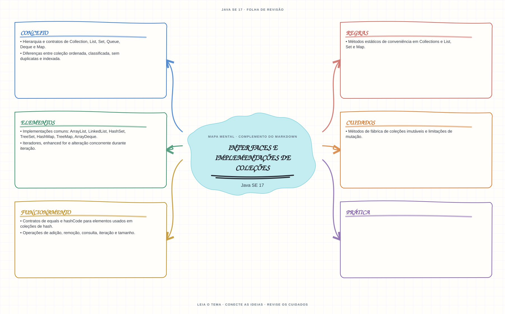

Ver mapa mental deste assuntoEscolher estruturas de coleção conforme ordem, duplicatas, acesso, mutabilidade e contrato de igualdade.
Primeiro contato: aprenda o conceito e pratique antes de consultar os detalhes de prova. Voltar aos fundamentos se algum termo ainda for novo.
- Leia o objetivo e localize a ideia principal no conteúdo abaixo.
- Preveja o resultado, compile e execute o exemplo.
- Faça a atividade sem copiar a solução e confira a checagem comentada.
EXEMPLO DE CONSOLE
Veja a regra em execução
Antes de executar, anote sua previsão. Compile o exemplo com o JDK e compare a saída observada com as regras deste assunto.
Comandos para compilar e executar
javac -d target/bin src/05-arrays-e-colecoes/interfaces-e-colecoes/InterfacesECollectionsExample.java
java -cp target/bin InterfacesECollectionsExampleA execução imprime o resultado no console para você comparar com sua previsão.
Consultar código-fonte: InterfacesECollectionsExample.java
import java.util.ArrayList;
import java.util.LinkedHashMap;
import java.util.LinkedHashSet;
import java.util.List;
import java.util.Map;
import java.util.Set;
public class InterfacesECollectionsExample {
public static void main(String[] args) {
System.out.println("=== Collections Framework: List, Set e Map ===");
System.out.println("List preserva ordem e aceita duplicatas; Set elimina duplicatas.");
System.out.println("LinkedHashSet e LinkedHashMap mantem a ordem de insercao.");
List<String> assuntos = new ArrayList<>();
assuntos.add("Generics");
assuntos.add("Streams");
assuntos.add("Generics");
Set<String> assuntosUnicos = new LinkedHashSet<>(assuntos);
Map<String, Integer> modulos = new LinkedHashMap<>();
modulos.put("Generics", 5);
modulos.put("Streams", 6);
System.out.println("List: " + assuntos);
System.out.println("Set criado a partir da lista: " + assuntosUnicos);
System.out.println("Map associa assunto a modulo: " + modulos);
System.out.println("Consulta por chave, Streams: " + modulos.get("Streams"));
}
}
PRATIQUE AGORA
Faça uma pequena alteração por conta própria
Guarde nomes em ArrayList e HashSet; adicione um nome repetido e compare os tamanhos.
Concluído quando: o programa compilar, produzir o resultado esperado e você conseguir explicar a regra aplicada.
CHECAGEM RÁPIDA · Interfaces e implementações de coleções
Quais contratos devem ser consistentes para uma chave usada em HashMap?
Conferir resposta comentada
equals e hashCode: objetos iguais devem ter o mesmo hash; mudar campos usados nesses métodos enquanto a chave está no mapa compromete a consulta.
Estude
- Hierarquia e contratos de
Collection,List,Set,Queue,DequeeMap. - Implementações comuns:
ArrayList,LinkedList,HashSet,TreeSet,HashMap,TreeMap,ArrayDeque. - Diferenças entre coleção ordenada, classificada, sem duplicatas e indexada.
- Operações de adição, remoção, consulta, iteração e tamanho.
- Iteradores, enhanced
fore alteração concorrente durante iteração. - Métodos de fábrica de coleções imutáveis e limitações de mutação.
- Métodos estáticos de conveniência em
CollectionseList,SeteMap. - Contratos de
equalsehashCodepara elementos usados em coleções de hash.
Prática
Escolha uma implementação para cada cenário e explique como ordem, duplicatas, mutabilidade e chave afetam o resultado.
Como este capítulo se relaciona com cada exame
Fundamentos reaproveitáveis; confira versão e APIs cobradas em Java 8.
Base de estudo deste portal; confirme o mapeamento com o blueprint vigente.
Conceitos úteis; revise também Sequenced Collections no Java 21.
Orientação editorial sobre reaproveitamento do material; não representa objetivos oficiais nem garante cobertura do exame. Consulte o comparativo e as fontes da Oracle.